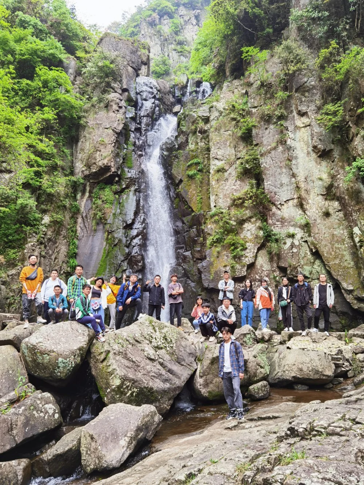
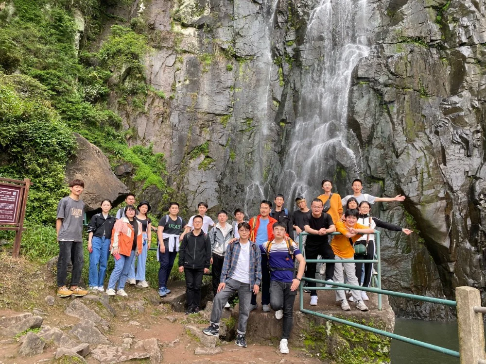

iMED春游记
越中山水绝纖尘，溪口风光步步新。
若得会稽藏拙去，白云深处亦行春。
万物复苏春意浓，正是春游好时节。4月25号， iMED宁波在赵老师的带领下开启了计划良久的春游计划，早上7点多钟，大家便已经陆续登上了早已等候多时的大巴车，随着最后一位成员登上大巴，我们一行人便已集合就绪，伴随着春天的阳光，我们向着雪窦山一路前行。
雪窦山风景秀丽，景色宜人，更是我国五大佛教名山之一的弥勒佛的道场，着实是春游的好去处。大家决定自上而下的游玩雪窦山，那第一步便是搭乘观光巴士去往山顶。山路蜿蜒向上，景色尽收眼底。巴士到站的第一站便是三隐潭，一路台阶向下，天上烟雨朦胧，大小瀑布在山间穿梭，好不美丽，可惜当天没有雾气弥漫，不然风景更是绝佳！当我们走到一座拱桥时，大家心领神会，各自摆好pose。

三隐潭顾名思义由上、中、下三潭组成，水流从山中冲出，形成三级瀑布，故称为三隐潭，三潭各有特点，其中上隐潭以幽险见长，中隐潭以清秀取胜，下隐潭以奇秀称绝。一番看下来，不由感叹：怪不得蒋委员长来了都说好，确实美不胜收。
除了瀑布一绝之外，各种形形色色、棱角分明的怪石也为雪窦山增添了不少趣味。无论是在瀑布中若隐若现的巨岩，还是被溪水冲刷成各种模样的溪涧巨石，都无疑吸引着我们的目光。这些石头中最为有趣的便是在我们行进途中遇到了升官桌，我与师兄郝晋奎一起冒险爬上，并留下对酌合影，确实别有乐趣。
接下来便是个人觉得本次春游最具有趣的一个地方——情人桥，情人桥是一座铁索桥，踏上桥时，大家不约而同地摇摆起来，激起阵阵尖叫，可惜有别的游客需要通过，不然，我觉得我还能在晃两个来回！
雪窦山景区山水相间，乘坐观光小火车和缆车来总览雪窦山景色也是一次美好体验，呼吸着山上的新鲜空气，我不由想，可惜没有在最好得时间段来游玩，不然定能看到野花开满山得场面。缆车之后便是妙高台，确实又高又妙，可惜天公不作美，雨渐渐大了起来，大家也没了游玩的心思。

下一个景点是雪窦寺，大家躲雨的同时拿出背包中的食物解决午饭问题，看着师兄师姐一个个掏出自嗨锅、小火锅，顿时感觉自己原本爱吃的小面包不香了。简单解决午餐后，稍作休整，一行人想不远处的弥勒大佛前进，一番游玩，朝拜之后，便是我们此次春游的最后一个景点——蒋氏故居，简单参观之后，对溪口蒋家历史的了解也加深了不少。
参观完蒋氏故居之后，大家坐上回慈溪的大巴，一天的游玩让每个人都疲惫不已，纷纷进入睡梦中，本次的雪窦山之行也在大巴车上的安静的氛围中，划下句号。
文 许聪
图 iMED